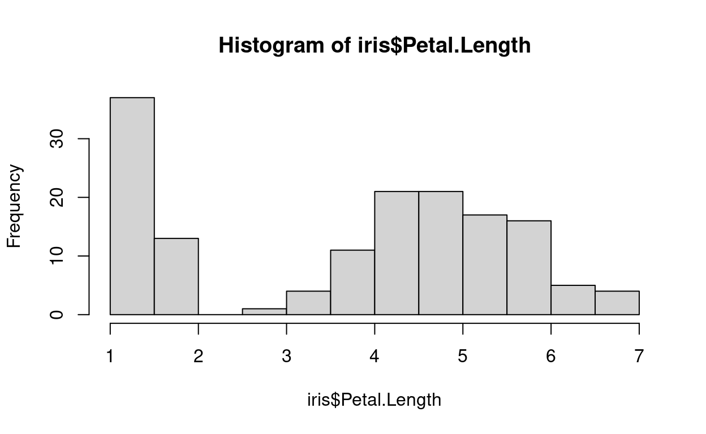
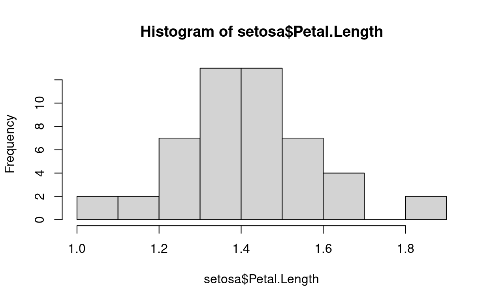
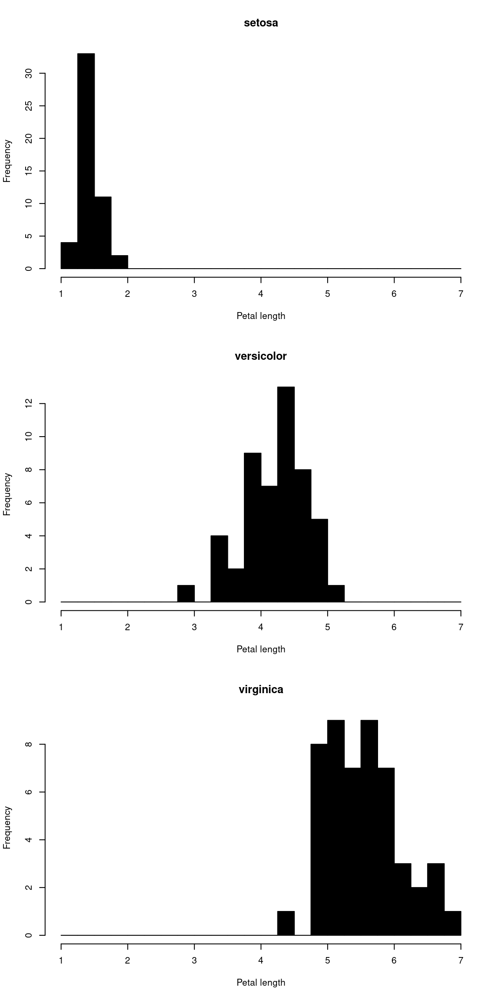
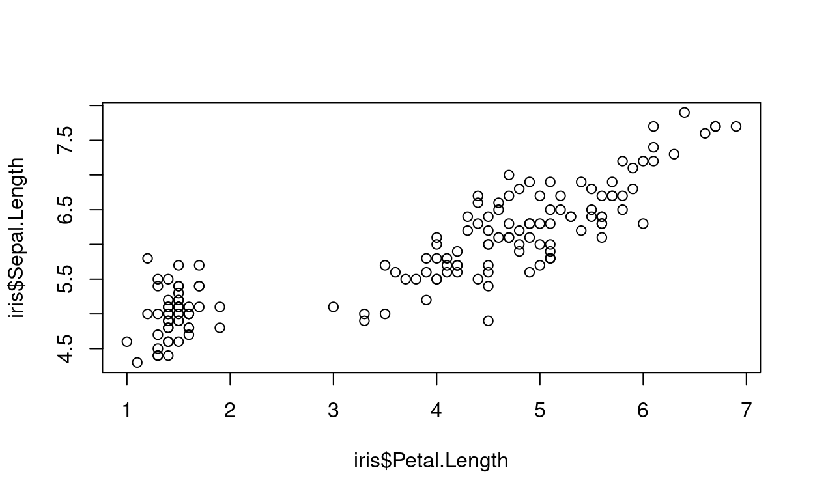
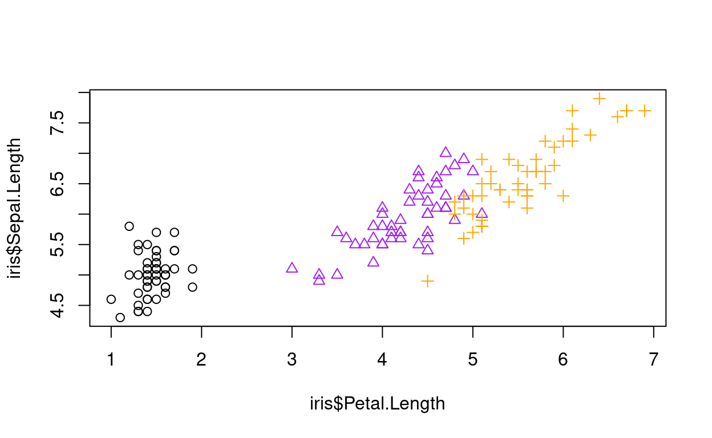
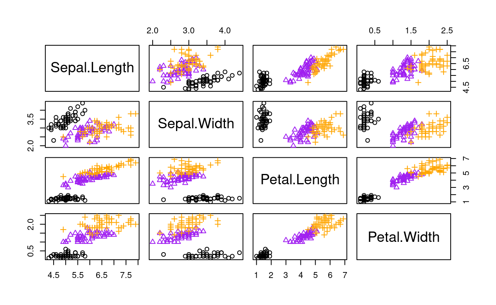

Hello data analysis
Introduction
In this tutorial we consider data introduced by Ronald Fisher in his 1936 paper The use of multiple measurements in taxonomic problems, otherwise known as Iris.
The learning objective is to develop experience of data analysis using some R commands for summary statistics, plots, correlation and group comparisons.
Load data
Inbuilt data in R
The data we use in this tutorial contains three plant species (setosa, virginica, versicolor) and four features measured for each sample. These quantify the morphologic variation of the iris flower in its three species, all measurements given in centimeters.
This dataset is inbuilt into R. It can be accessed via:
## load iris, a dataset inbuilt into R
data(iris)The first thing I do when loading data is to check it looks as
expected. The command head() shows the first few rows.
## have a look at the data: head() prints out the first few rows
head(iris)Saving and loading your own data
When you have your own dataset you will need to load it into R in a different way.
A common method is to save data as a commar separated file (.csv). This is a text file that separates out columns using a commar (,). You can do this in many programs, including Microsoft Excel, Libreoffice or just a text editor.
Data can be saved in R as a csv file using write.csv().
We next demonstrate how to save the data from R to a CSV file, in this
case the iris data:
write.csv(file="iris-out.csv", iris, row.names=FALSE)This created a CSV file called iris-out.csv.
How can we load a CSV file? One way is through
read.csv(). For example, to load the iris data into an
object we call iris use:
iris = read.csv("iris-out.csv")head(__) Hint: replace __ with iris
Summary statistics
summary() function
In the first tutorial you were introduced to the
summary() function. When run on a data frame like the
iris data it gives summary statistics for each column,
including min, max, mean, median and upper and lower quartiles:
summary(iris)## Sepal.Length Sepal.Width Petal.Length Petal.Width
## Min. :4.300 Min. :2.000 Min. :1.000 Min. :0.100
## 1st Qu.:5.100 1st Qu.:2.800 1st Qu.:1.600 1st Qu.:0.300
## Median :5.800 Median :3.000 Median :4.350 Median :1.300
## Mean :5.843 Mean :3.057 Mean :3.758 Mean :1.199
## 3rd Qu.:6.400 3rd Qu.:3.300 3rd Qu.:5.100 3rd Qu.:1.800
## Max. :7.900 Max. :4.400 Max. :6.900 Max. :2.500
## Species
## Length:150
## Class :character
## Mode :character
##
##
## apply(): statistics by row or column of data
A more general way to get statistics by column is to use
apply(__, 2, __). For example, let us calculate the mean
to the first 4 columns of iris
apply(iris[,1:4], 2, mean) #mean first 4 cols## Sepal.Length Sepal.Width Petal.Length Petal.Width
## 5.843333 3.057333 3.758000 1.199333In general we get statistics by column through
apply(*data*, 2, *statistic*) where we tell R
- what data to use (e.g.
iris), - and what statistic or function to run
(e.g.
mean),
The 2 says do it by column. If we wanted to for
for each rows in the data we’d replace with 1.
So, we can do standard deviation by column by changing
mean for sd, via:
apply(iris[,1:4], 2, sd) #standard deviation## Sepal.Length Sepal.Width Petal.Length Petal.Width
## 0.8280661 0.4358663 1.7652982 0.7622377Now your turn - calculate the maximum by column
apply(iris[,1:4], 2, __) Hint: replace __ by max
When presenting data it is important to remove spurious precision and
many decimal places, by rounding. The round() function is
for this. It is demonstrated on the standard deviation by column
below.
##save to R object called mysd
mysd = apply( iris[,1:4], 2, sd ) #standard deviation
## print out, rounded to 2 d.p.
round(mysd, 2)## Sepal.Length Sepal.Width Petal.Length Petal.Width
## 0.83 0.44 1.77 0.76The second argument to round() says how many decimal
places to round to. Above I rounded to 2 d.p..
Now your turn. In the code cell below, try to calculate standard
quantiles with the R function quantile, and round them to 1
decimal place
myquant = apply( iris[,1:4], 2, __ )
round(__, __)Hint: see the command used above - change
sd to quantile and mysd to
myquant
tapply(): statistics by group
apply() calculates a function by row or column. What if
you want to do the summary statistic by different groups? For example,
we might with to know summary statistics for each different iris
species. One way is to do this is to use tapply(). The next
code chunk calculates mean sepal length by species:
tapply(iris$Sepal.Length, iris$Species, mean) #mean sepal length by type of plant## setosa versicolor virginica
## 5.006 5.936 6.588In the function
tapply(argument 1, argument 2, argument 3)
- The first argument is the data of interest (iris$Sepal.Length in example above),
- The second argument is the grouping variable (here iris$Species), and
- The third argument is the function or statistic we want to calculate (here mean).
This is another example that does summary statistics of sepal length by species:
tapply(iris$Sepal.Length, iris$Species, summary) ## $setosa
## Min. 1st Qu. Median Mean 3rd Qu. Max.
## 4.300 4.800 5.000 5.006 5.200 5.800
##
## $versicolor
## Min. 1st Qu. Median Mean 3rd Qu. Max.
## 4.900 5.600 5.900 5.936 6.300 7.000
##
## $virginica
## Min. 1st Qu. Median Mean 3rd Qu. Max.
## 4.900 6.225 6.500 6.588 6.900 7.900Now your turn. Calculate standard deviation of sepal length by species
tapply(iris$Sepal.Length, iris$Species, __) Hint: the statistic is sd.
Now calculate summary statistics about petal width by species
tapply(iris$__, iris$Species, __) Hint: The column name for petal width is
Petal.Width. The statistic is summary.
Histograms
In the previous section the summary statistics showed that petal
length median was much higher than the mean. This is illustrated by the
overall distribution of petal length data shown using a histogram, by
using the function hist() as follows.
hist(iris$Petal.Length)
The median is much higher than the mean because there is a large spike close to zero in the histogram. The reason is we have mixed up three species in the overall distribution - setosa, versicolor and virgina.
If we look within each species (or subgroup) the median is close to the mean.
You turn: use tapply() to calculate summary
statistics by Species
tapply(iris$Petal.Length, iris$__, summary) We may also wish to visualise histograms for each subtype. One way to
do this is to use the subset() operator introduced earlier.
First define the dataset (I call it setosa) that only
includes this Species, then run the histogram for Petal length.
setosa = subset(iris, iris$Species == "setosa")
hist(setosa$Petal.Length)
Now your turn. Produce a histogram of petal length for the versicolor type of iris.
versicol= subset(iris, iris$Species == __)
hist(__$Petal.Length)Hint: The Species is called “versicolor”. Don’t
forget the quotation marks. The name of the new data with just
veriscolor types needs to be entered into the hist()
command.
Sometimes it helps to put all charts on the same plot. This may be accomplished, for example, as follows.
setosa = subset(iris, iris$Species == "setosa")
versicol = subset(iris, iris$Species == "versicolor")
virginica = subset(iris, iris$Species == "virginica")
par(mfrow=c(3,1))
hist(setosa$Petal.Length, xlim=c(1,7), col=1, main="setosa", breaks=seq(1,7,by=0.25), xlab="Petal length")
hist(versicol$Petal.Length, xlim=c(1,7), col=1, main="versicolor", breaks=seq(1,7,by=0.25), xlab="Petal length")
hist(virginica$Petal.Length, xlim=c(1,7), col=1, main="virginica", breaks=seq(1,7,by=0.25), xlab="Petal length")
The plots shows clear differences in petal length between the species.
The histograms also look a little different than earlier on, because we did the following in the code.
Before calling
hist()we wrotepar(mfrow=c(3,1)). This instructs R to have three plots arranged in the single plot, as a matrix with 3 rows and 1 column. The next commands fill up the slots. If you wanted them with three columns and one row then you’d usepar(mfrow=c(1,3)); a 2x2 matrix would bepar(mfrow=c(2,2))etc.We gave more arguments to
hist()to customise the plots. These were:Choosing the x axis range (
xlim = c(1,7)). Can similarly set y-axis throughylim = c(__, __)Choosing the title of the plot through
main="my title"Choosing colour (bars as black, through
col = 1)Choosing the bins through
breaks =(and use ofseq()function for a sequence, whereseq(1,7,by=0.25)is shorthand for c(1,1.25, 1.5, 1.75, 2, 2.25, …, 6.75, 7))Setting x-axis label through
xlab="", similarly y-axis label can be set
Now your turn. Produce two histogram of petal width using the
setosa and virginica type of iris, restricting
the x-axis betwee 0 and 2.5. Make them red by setting
col=2.
setosa = subset(iris, iris$Species == "setosa")
versicol = subset(iris, iris$Species == "versicolor")
par(mfrow=c(__,1))
hist(__$Petal.Width, xlim=c(0, __), col=__, breaks=seq(0, 2.6, by=0.2))
hist(__$Petal.Width, xlim=c(0, __), col=__, breaks=seq(0, 2.6, by=0.2))Hints: We want two rows in the plot - enter 2 into
the mfrow part. Then, inside hist you need the
data names first, 2.5 in the xlim argument, and col=2. (If
you change col=3 what happens?)
Boxplots
An alternative way to show the distribution is through a boxplot.
In R if you call the plot() function with a
factor variable (such as Species) first, followed by the
numeric variable (such as petal length) then it will produce a boxplot.
For example
plot(iris$Species,iris$Petal.Length, ylab="Petal Length")An alternative is to use the function boxplot().
virginica = subset(iris, iris$Species == "virginica")
boxplot(virginica$__)Hint: Petal.Length
It is also possible to put boxplot of subgroups side by side using
the split() function
boxplot( split( iris$Petal.Length, iris$Species) )Task for you: adapt the code just introduced to produce a boxplot
of petal width by species using the split() function. Label
the y-axis “Petal Width”.
boxplot( __( iris$__, iris$Species), ylab=__ )Hint: Use split, Petal.Width. Don’t
forget quotation marks for the label.
Scatter plots
Next lets look at the association between variables by using scatter plots. First plot petal length against sepal length.
plot(iris$Petal.Length, iris$Sepal.Length)This combines the different species. To look at them separately one might plot them separately.
Task for you: repeat the plot withsetosa and
virginica data only
setosa = subset(iris, iris$Species == "setosa")
versicol = subset(iris, iris$Species == "versicolor")
par(mfrow=c(1,2))
plot(__$Petal.Length, __$Sepal.Length)
plot(__$Petal.Length, __$Sepal.Length)A better aproach is to include all species on the same plot, but to use different plotting characters.
- To do this we’ll first create a variable called iris$colour that is a number 1,2,3 related to the species. This is so that we can use different colour and plotting symbols in the charts.
- Then we use the
coloption to choose colour, and pchoption to choose the plotting character
iris$colour = as.integer( iris$Species ) ##Species is a factor, as.integer() converts it to a number to be used for colour choice
plot(iris$Petal.Length, iris$Sepal.Length, col = iris$colour, pch=iris$colour)iris$colour = as.integer( iris$Species ) ##Species is a factor, as.integer() converts it to a number to be used for colour choice
plot(iris$__, iris$__, col = iris$colour, pch=iris$colour, xlab=__, ylab=__)Hints: Petal.Length; Petal.Width; Don’t forget the quotation marks for the x and y labels; The first argument to plot is the x-axis.
R has a poor choice of colours by default, because some people cannot see the difference between red and green. But we can change the colours as we like. For example, suppose we want 1 to translate to black, 2 to purple and 3 to orange.
iris$colour = as.integer( iris$Species ) ##Species is a factor, as.integer() converts it to a number to be used for colour choice
plot(iris$Petal.Length, iris$Sepal.Length, col = c("black", "purple", "orange")[iris$colour], pch=iris$colour)It is possible to add a legend to the chart, to identify which points
correspond to which species by using the legend()
function.
iris$colour = as.integer( iris$Species ) ##Species is a factor, as.integer() converts it to a number to be used for colour choice
plot(iris$Petal.Length, iris$Sepal.Length, col = c("black", "purple", "orange")[iris$colour], pch=iris$colour)
legend("topleft", c("Setosa", "Versicolor", "Virginica"), col=c("black", "purple", "orange"), pch=1:3)The first argument specifies where to place the key (“topleft”). The
second are the labels to use; col the colours;
pch the plotting characters. You need to make sure these
are the same as specified in the plot.
cex=0.5)
iris$colour = as.integer( iris$Species ) ##Species is a factor, as.integer() converts it to a number to be used for colour choice
plot(iris$__, iris$__, pch = iris$colour, col=c("black", "purple", "orange")[iris$colour], xlab=__, ylab=__)
legend(__, c("Setosa", "Versicolor", "Virginica"), col=c("black", "purple", "orange"), pch=1:3, cex=0.5)Lastly, a quick way to plot all the variables (Petal and sepal length
and width) against each other in the same chart is to use a function
called pairs(). This does a so-called matrix plot of the
variables against each other.
iris$colour = as.integer( iris$Species ) ##Species is a factor, as.integer() converts it to a number to be used for colour choice
pairs(iris[,1:4], pch=iris$colour, col=c("black", "purple", "orange")[iris$colour])This shows correlation between the measurements, and also clear differences between species (setosa black o, versicolor purple triangle, virginica orange +).
Correlation coefficients
R has functions to calculate correlation coefficients to quantify the
association between two continuous variables. The main one is
cor.test. For example,
cor.test(iris[,1], iris[,2])##
## Pearson's product-moment correlation
##
## data: iris[, 1] and iris[, 2]
## t = -1.4403, df = 148, p-value = 0.1519
## alternative hypothesis: true correlation is not equal to 0
## 95 percent confidence interval:
## -0.27269325 0.04351158
## sample estimates:
## cor
## -0.1175698The first column is sepal length, the second sepal width, so this is correlation between sepal length and width.
An alternative way to run the same command is name the columns.
Task for you: calculate Spearman correlation between Sepal Length and Sepal Width by naming these columns, and using the additional argument method=“spearman”
cor.test( iris$__, iris$__, method="spearman")Task for you. Calculate spearman correlation for the setosa subgroup, using the setosa subset data
setosa = subset(iris, iris$Species == "setosa")
cor.test(__$Sepal.Length, __$Sepal.Width, method= __) There is a much stronger correlation when on species basis only, as expected.
Q Now try to repeat the above analysis for a different species, and different measurements - you decide what
##add your code hereTwo-group comparisons
We next use the iris data to demonstrate some methods used to compare two independent groups.
We demonstrate by looking at the sepal length in the versicolor and virginica species (i.e. two groups).
Suppose we wish to understand differences between the species in Sepal length. We might first look at summary statistics and boxplots, as already introduced.
summary(versicol$Sepal.Length)## Min. 1st Qu. Median Mean 3rd Qu. Max.
## 4.900 5.600 5.900 5.936 6.300 7.000summary(virginica$Sepal.Length)## Min. 1st Qu. Median Mean 3rd Qu. Max.
## 4.900 6.225 6.500 6.588 6.900 7.900boxplot(versicol$Sepal.Length, virginica$Sepal.Length, names=c("Versicolor", "Virginica"))
The groups certainly seem different. To test for a difference in
means one might do a t-test, using the t.test() function as
follows.
t.test(versicol$Sepal.Length, virginica$Sepal.Length)##
## Welch Two Sample t-test
##
## data: versicol$Sepal.Length and virginica$Sepal.Length
## t = -5.6292, df = 94.025, p-value = 1.866e-07
## alternative hypothesis: true difference in means is not equal to 0
## 95 percent confidence interval:
## -0.8819731 -0.4220269
## sample estimates:
## mean of x mean of y
## 5.936 6.588The output does a t-test. It gives the t-statistic and associated p-value. It also estimates the mean difference between the groups with a 95% confidence interval for the mean difference.
How would you do a t-test for Sepal Width?
versicol = subset(iris, iris$Species == "versicolor")
virginica = subset(iris, iris$Species == "virginica")
t.test(versicol$__, virginica$__)The Wilcoxon (non-parametric) test follows the same structure, but is
called wilcox.test().
Try to do a wilcoxon test for Sepal Length
versicol = subset(iris, iris$Species == "versicolor")
virginica = subset(iris, iris$Species == "virginica")
__(versicol$Sepal.Length, virginica$Sepal.Length)Linear regression
We finally use the iris data to demonstrate linear regression in R.
We demonstrate by looking at the sepal length vs petal length, firstly for the versicolor species.
We first plot the data to assess the relationship visually.
plot(versicol$Petal.Length,versicol$Sepal.Length, xlab="Sepal Length (cm)", ylab="Petal length (cm)")
As expected, there does appear to be an association. Next we fit a linear regression model to these data, and print the summary and confidence intervals on the regression coefficients.
myreg<-lm(Sepal.Length ~ Petal.Length, versicol)
summary(myreg)##
## Call:
## lm(formula = Sepal.Length ~ Petal.Length, data = versicol)
##
## Residuals:
## Min 1Q Median 3Q Max
## -0.73479 -0.20272 -0.02065 0.26092 0.69956
##
## Coefficients:
## Estimate Std. Error t value Pr(>|t|)
## (Intercept) 2.4075 0.4463 5.395 2.08e-06 ***
## Petal.Length 0.8283 0.1041 7.954 2.59e-10 ***
## ---
## Signif. codes: 0 '***' 0.001 '**' 0.01 '*' 0.05 '.' 0.1 ' ' 1
##
## Residual standard error: 0.3425 on 48 degrees of freedom
## Multiple R-squared: 0.5686, Adjusted R-squared: 0.5596
## F-statistic: 63.26 on 1 and 48 DF, p-value: 2.586e-10round(confint(myreg),2)## 2.5 % 97.5 %
## (Intercept) 1.51 3.30
## Petal.Length 0.62 1.04We may add the fitted regression line to the scatter plot as follows.
##scatter plot as above
plot(versicol$Petal.Length,versicol$Sepal.Length, xlab="Sepal Length (cm)", ylab="Petal length (cm)")
## add grid based on x/y axis ticks
grid()
## add regression line
abline(myreg, col="red")
# add confidence intervals to regression line
## x-values at which to calculate confidence interval
newx <- seq(2, 6, by=0.2)
## confidence interval at the x-values
conf_interval <- predict(myreg, newdata=data.frame(Petal.Length=newx), interval="confidence",level = 0.95)
## add the confidence interval lines to plot
lines(newx, conf_interval[,2], col="blue", lty=2)
lines(newx, conf_interval[,3], col="blue", lty=2)
Based on the fit shown in the plot, do you think a line looks a good model for the data?
It looks reasonable to my eye. To illustrate what could happen when a linear model is not a good fit, and how the plots above look, we next repeat the analysis but fit to all species together.
plot(iris$Petal.Length,iris$Sepal.Length, xlab="Sepal Length (cm)", ylab="Petal length (cm)")Just by ploting the data we can see that a linear might be reasonable for the right hand side (from approx 3 on the x-axis), but not to the whole data.
Q: Repeat the regression analysis above, but using the complete
data which is in the iris dataframe. Replace __ below with
the correct text to do this..
##scatter plot as above
plot(__$Petal.Length, __$Sepal.Length, xlab="Sepal Length (cm)", ylab="Petal length (cm)")
## add grid based on x/y axis ticks
grid()
## fit regression
myreg2<-lm(Sepal.Length ~ Petal.Length, iris )
## add regression line
abline(__, col="red")
# add confidence intervals to regression line
## x-values at which to calculate confidence interval
newx <- seq(1, 8, by=0.2)
## confidence interval at the x-values
conf_interval <- predict(__, newdata=data.frame(Petal.Length=newx), interval="confidence",level = 0.95)
## add the confidence interval lines to plot
lines(newx, conf_interval[,2], col="blue", lty=2)
lines(newx, conf_interval[,3], col="blue", lty=2)Hint: replace __ with iris, or myreg2 as appropriate
Conclusion
This is the end of the tutorial. A number of R functions for basic data analysis have been introduced.
The next tutorial will introduce you to RStudio. Once you have done this, you are suggested to try to run the analysis from this tutorial in RStudio by copying the commands in order.